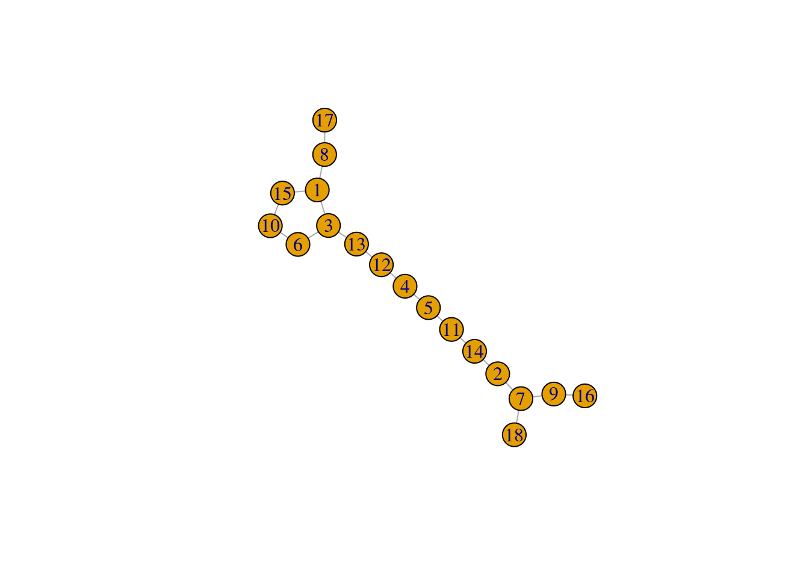
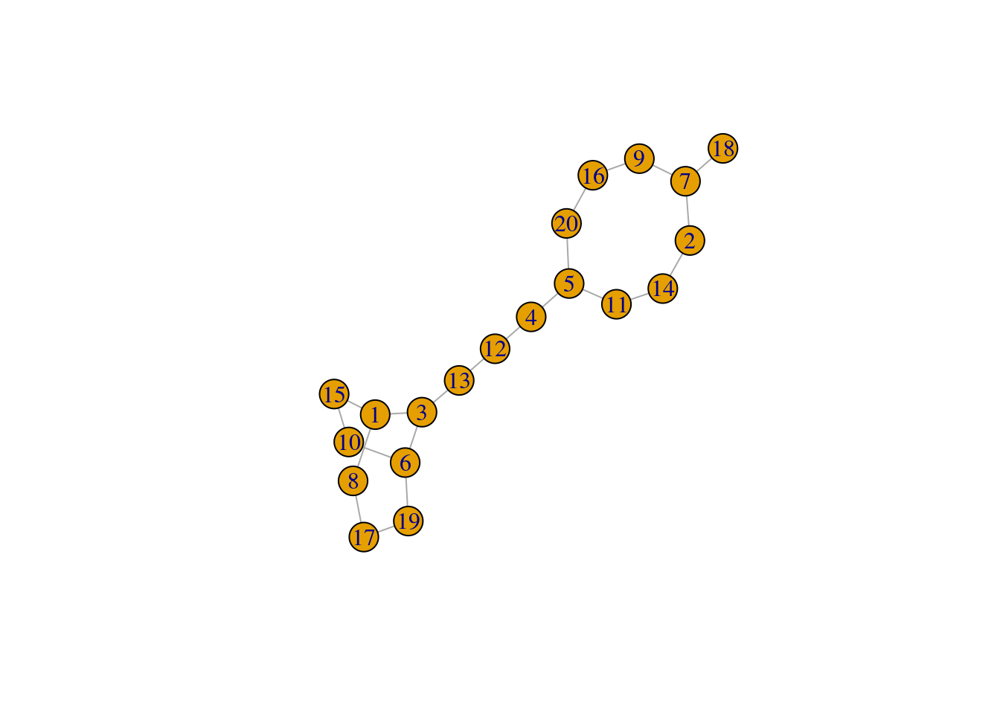
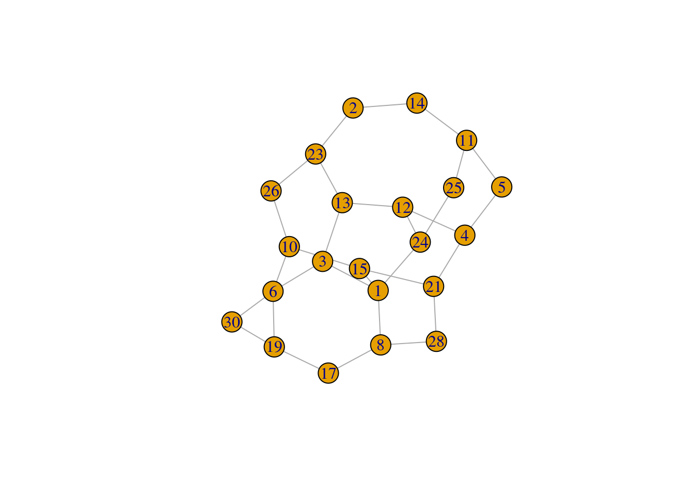

Solving problems with graphs
2023-02-09
Last updated: 2023-02-09
Checks: 7 0
Knit directory: muse/
This reproducible R Markdown analysis was created with workflowr (version 1.7.0). The Checks tab describes the reproducibility checks that were applied when the results were created. The Past versions tab lists the development history.
Great! Since the R Markdown file has been committed to the Git repository, you know the exact version of the code that produced these results.
Great job! The global environment was empty. Objects defined in the global environment can affect the analysis in your R Markdown file in unknown ways. For reproduciblity it’s best to always run the code in an empty environment.
The command set.seed(20200712) was run prior to running
the code in the R Markdown file. Setting a seed ensures that any results
that rely on randomness, e.g. subsampling or permutations, are
reproducible.
Great job! Recording the operating system, R version, and package versions is critical for reproducibility.
Nice! There were no cached chunks for this analysis, so you can be confident that you successfully produced the results during this run.
Great job! Using relative paths to the files within your workflowr project makes it easier to run your code on other machines.
Great! You are using Git for version control. Tracking code development and connecting the code version to the results is critical for reproducibility.
The results in this page were generated with repository version 0c22d6a. See the Past versions tab to see a history of the changes made to the R Markdown and HTML files.
Note that you need to be careful to ensure that all relevant files for
the analysis have been committed to Git prior to generating the results
(you can use wflow_publish or
wflow_git_commit). workflowr only checks the R Markdown
file, but you know if there are other scripts or data files that it
depends on. Below is the status of the Git repository when the results
were generated:
Ignored files:
Ignored: .Rhistory
Ignored: .Rproj.user/
Ignored: r_packages_4.1.2/
Ignored: r_packages_4.2.0/
Untracked files:
Untracked: analysis/cell_ranger.Rmd
Untracked: analysis/tss_xgboost.Rmd
Untracked: data/HG00702_SH089_CHSTrio.chr1.vcf.gz
Untracked: data/HG00702_SH089_CHSTrio.chr1.vcf.gz.tbi
Untracked: data/ncrna_NONCODE[v3.0].fasta.tar.gz
Untracked: data/ncrna_noncode_v3.fa
Note that any generated files, e.g. HTML, png, CSS, etc., are not included in this status report because it is ok for generated content to have uncommitted changes.
These are the previous versions of the repository in which changes were
made to the R Markdown (analysis/graph.Rmd) and HTML
(docs/graph.html) files. If you’ve configured a remote Git
repository (see ?wflow_git_remote), click on the hyperlinks
in the table below to view the files as they were in that past version.
| File | Version | Author | Date | Message |
|---|---|---|---|---|
| Rmd | 0c22d6a | Dave Tang | 2023-02-09 | Solving problems with graphs |
Perfect squares
I saw this question on Quora:
A teacher assigns each of her 18 students a different integer from 1 through 18. The teacher forms pairs of study partners by using the rule that the sum of the pair of numbers is a perfect square. Assuming the 9 pairs of students follow this rule, the student assigned which number must be paired with the student assigned the number 1?
A. 16 B. 15 C. 9 D. 8 E. 3
Firstly, a perfect square is a number made by squaring a whole number. The first ten perfect squares are listed below.
(1:10)^2 [1] 1 4 9 16 25 36 49 64 81 100We can already narrow the answer to either A (16) or C (9), which means that the student assigned 1 can either pair with the student assigned 8 or 15. But the student assigned 8 can also pair with 17 and the student assigned 15 can also pair with 10. A graph is a nice way to visualise the possibilities to narrow down on a solution.
We can use the combn() function to generate all the pair
combinations.
student_pairs <- t(combn(1:18, 2))
tail(student_pairs) [,1] [,2]
[148,] 15 16
[149,] 15 17
[150,] 15 18
[151,] 16 17
[152,] 16 18
[153,] 17 18However, not all pairs form perfect squares so we need to eliminate
those pairings. Given the definition of a perfect square, we can write a
function to check if a number is a perfect square. The tricky bit is
writing a test in R to check whether a number is a whole number because
the sqrt() function does not return an integer even when a
number is a perfect square.
class(sqrt(25))[1] "numeric"class(sqrt(26))[1] "numeric"We can use modulus one because a whole number will equally divide by one.
25 %% 1[1] 025.5 %% 1[1] 0.5Now we can write a function to check whether a number is a perfect square.
check_ps <- function(n){
stopifnot(n > 0)
sqrt(n) %% 1 == 0
}
check_ps(100)[1] TRUERemove the pairs that are not perfect squares.
wanted <- check_ps(apply(student_pairs, 1, sum))
student_pairs <- student_pairs[wanted, ]
student_pairs [,1] [,2]
[1,] 1 3
[2,] 1 8
[3,] 1 15
[4,] 2 7
[5,] 2 14
[6,] 3 6
[7,] 3 13
[8,] 4 5
[9,] 4 12
[10,] 5 11
[11,] 6 10
[12,] 7 9
[13,] 7 18
[14,] 8 17
[15,] 9 16
[16,] 10 15
[17,] 11 14
[18,] 12 13Let’s check whether all students are present, to see if they were
included in at least one pair. The all() function checks
whether all values are true.
all(1:18 %in% student_pairs)[1] TRUEFinally, we can visualise the pairs as a graph.
suppressPackageStartupMessages(library(igraph))
net <- graph.data.frame(student_pairs, directed = FALSE)
plot(net, layout = layout_components(net))
Since 16, 17, and 18 must pair with 9, 8, and 7, respectively, 2 must pair with 14, 11 with 5, 4 with 12, 13 with 3, 6 with 10. Therefore 1 has to pair with 15.
I’m curious whether this type of pairing is possible with any class size that is even.
gen_pairs <- function(n){
spairs <- t(combn(1:n, 2))
wanted <- check_ps(apply(spairs, 1, sum))
spairs[wanted, ]
}
plot_pairs <- function(spairs){
net <- graph.data.frame(spairs, directed = FALSE)
plot(net, layout = layout_components(net))
}
plot_pairs(gen_pairs(20))
To check whether a solution exists, we:
- Check whether all students are in at least one potential pair.
- Find pairs where one number is unique, i.e. unique pair, (and save them) and then remove other pairs that include either number of the unique pair.
- Keep repeating step 2 until no pairs are left or if no unique pair exists, we will have to use a backtracking algorithm to pick a random pair (not implemented).
Let’s see if this works for our example with a class of 18.
eg1 <- gen_pairs(18)
get_row_idx <- function(mat, vec){
unique(which(t(apply(mat, 1, function(x) x %in% vec)), arr.ind = TRUE)[, 1])
}
get_unique_pair_idx <- function(mat){
vec <- as.vector(mat)
dup <- unique(vec[duplicated(vec)])
wanted <- setdiff(unique(vec), dup)
get_row_idx(mat, wanted)
}
find_solution <- function(mat, iter = 100){
solution <- matrix(nrow = 0, ncol = 2)
i <- 1
while(nrow(mat) > 0){
uniq_row <- get_unique_pair_idx(mat)
if(length(uniq_row) == 0){
message("No unique row")
plot_pairs(mat)
return(mat)
}
up <- mat[uniq_row, ]
solution <- rbind(solution, up, deparse.level = 0)
vec <- as.vector(up)
wanted <- get_row_idx(mat, vec)
mat <- mat[-wanted,, drop = FALSE]
if(length(unique(as.vector(mat))) %% 2 != 0){
message("Odd number remaining")
plot_pairs(mat)
return(mat)
}
i <- i + 1
if(i == iter){
print(solution)
stop("Too many iterations")
}
}
return(solution)
}
find_solution(eg1) [,1] [,2]
[1,] 7 18
[2,] 8 17
[3,] 9 16
[4,] 2 14
[5,] 5 11
[6,] 4 12
[7,] 3 13
[8,] 1 15
[9,] 6 10The code works nicely for a class size of 18 and 24 but doesn’t handle a class size of 20 properly because there is no solution.
eg2 <- gen_pairs(20)
plot_pairs(eg2)
When 18 is paired with 7, one number will be left without a pair.
The code also doesn’t work when we have to make a choice because each number has two or more possible pairs. Backtracking needs to be implemented at this point to find a possible solution.
eg3 <- gen_pairs(30)
find_solution(eg3)No unique row
[,1] [,2]
[1,] 1 3
[2,] 1 8
[3,] 1 15
[4,] 1 24
[5,] 2 14
[6,] 2 23
[7,] 3 6
[8,] 3 13
[9,] 4 5
[10,] 4 12
[11,] 4 21
[12,] 5 11
[13,] 6 10
[14,] 6 19
[15,] 6 30
[16,] 8 17
[17,] 8 28
[18,] 10 15
[19,] 10 26
[20,] 11 14
[21,] 11 25
[22,] 12 13
[23,] 12 24
[24,] 13 23
[25,] 15 21
[26,] 17 19
[27,] 19 30
[28,] 21 28
[29,] 23 26
[30,] 24 25
sessionInfo()R version 4.2.0 (2022-04-22)
Platform: x86_64-pc-linux-gnu (64-bit)
Running under: Ubuntu 20.04.4 LTS
Matrix products: default
BLAS: /usr/lib/x86_64-linux-gnu/openblas-pthread/libblas.so.3
LAPACK: /usr/lib/x86_64-linux-gnu/openblas-pthread/liblapack.so.3
locale:
[1] LC_CTYPE=en_US.UTF-8 LC_NUMERIC=C
[3] LC_TIME=en_US.UTF-8 LC_COLLATE=en_US.UTF-8
[5] LC_MONETARY=en_US.UTF-8 LC_MESSAGES=en_US.UTF-8
[7] LC_PAPER=en_US.UTF-8 LC_NAME=C
[9] LC_ADDRESS=C LC_TELEPHONE=C
[11] LC_MEASUREMENT=en_US.UTF-8 LC_IDENTIFICATION=C
attached base packages:
[1] stats graphics grDevices utils datasets methods base
other attached packages:
[1] igraph_1.3.5 forcats_1.0.0 stringr_1.5.0 dplyr_1.1.0
[5] purrr_1.0.1 readr_2.1.3 tidyr_1.3.0 tibble_3.1.8
[9] ggplot2_3.4.0 tidyverse_1.3.2 workflowr_1.7.0
loaded via a namespace (and not attached):
[1] Rcpp_1.0.10 lubridate_1.8.0 getPass_0.2-2
[4] ps_1.7.2 assertthat_0.2.1 rprojroot_2.0.3
[7] digest_0.6.31 utf8_1.2.2 R6_2.5.1
[10] cellranger_1.1.0 backports_1.4.1 reprex_2.0.2
[13] evaluate_0.20 highr_0.9 httr_1.4.4
[16] pillar_1.8.1 rlang_1.0.6 googlesheets4_1.0.1
[19] readxl_1.4.1 rstudioapi_0.14 whisker_0.4
[22] callr_3.7.3 jquerylib_0.1.4 rmarkdown_2.20
[25] googledrive_2.0.0 munsell_0.5.0 broom_1.0.3
[28] compiler_4.2.0 httpuv_1.6.8 modelr_0.1.10
[31] xfun_0.36 pkgconfig_2.0.3 htmltools_0.5.4
[34] tidyselect_1.2.0 fansi_1.0.3 crayon_1.5.2
[37] withr_2.5.0 tzdb_0.3.0 dbplyr_2.3.0
[40] later_1.3.0 grid_4.2.0 jsonlite_1.8.4
[43] gtable_0.3.1 lifecycle_1.0.3 DBI_1.1.3
[46] git2r_0.30.1 magrittr_2.0.3 scales_1.2.1
[49] cli_3.6.0 stringi_1.7.12 cachem_1.0.6
[52] fs_1.5.2 promises_1.2.0.1 xml2_1.3.3
[55] bslib_0.4.2 ellipsis_0.3.2 generics_0.1.3
[58] vctrs_0.5.2 tools_4.2.0 glue_1.6.2
[61] hms_1.1.2 processx_3.8.0 fastmap_1.1.0
[64] yaml_2.3.7 colorspace_2.0-3 gargle_1.3.0
[67] rvest_1.0.3 knitr_1.42 haven_2.5.1
[70] sass_0.4.5